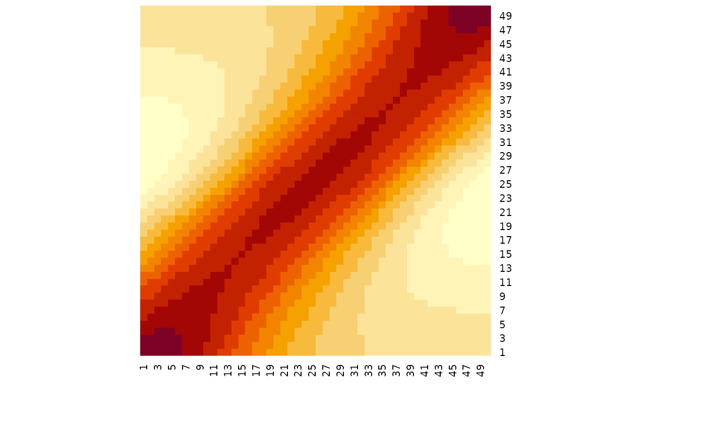
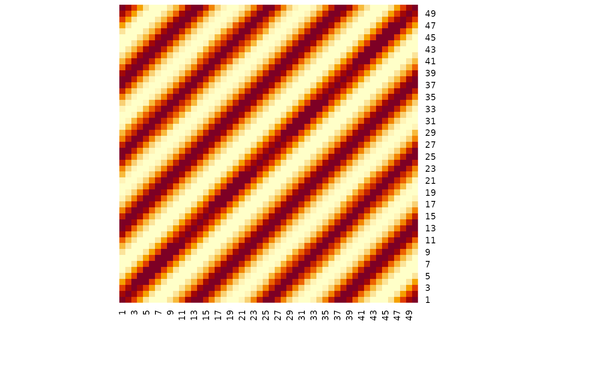
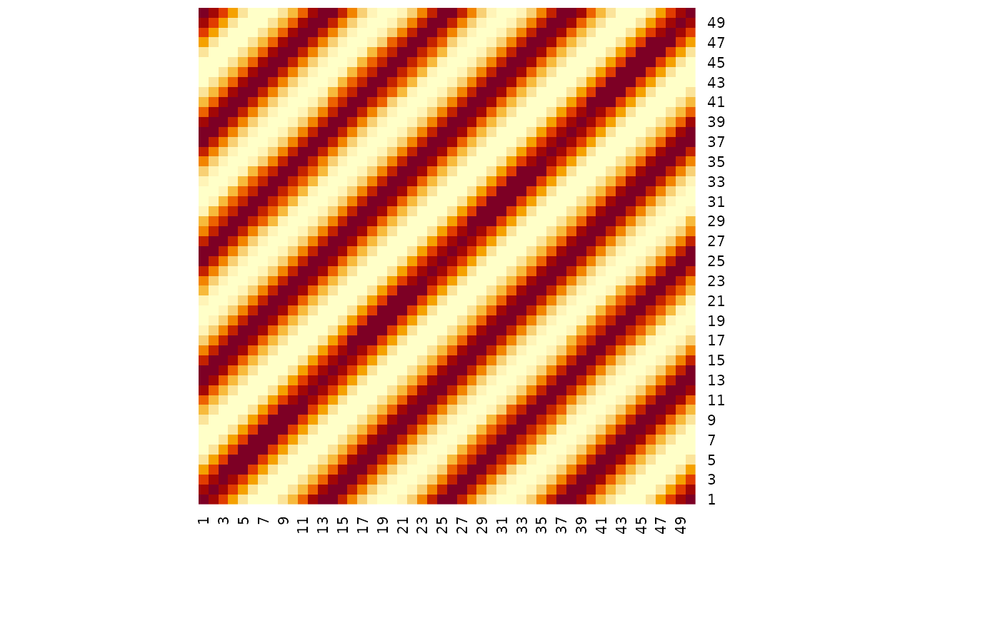

Generate a \(N \times N\) covariance matrix, \(\Sigma\), by
passing a distance vector of length \(N\), x, to one of the following
covariance functions:
Exponentiated Quadtratic $$\Sigma_{ij} = \sigma^2 \exp \left( \frac{|x_i - x_j|^2}{-2 \ \rho^2} \right)$$
Rational Quadratic $$\Sigma_{ij} = \sigma^2 \left(1 + \frac{|x_i - x_j|^2}{2 \alpha \rho^2} \right)^{-\alpha}$$
Periodic $$\Sigma_{ij} = \sigma^2 \exp \left(\frac{-2 \sin^2(\pi |x_i - x_j|/p)}{\rho^2} \right)$$
Linear $$\Sigma_{ij} = \beta_0 + \beta (x_i - c)(x_j - c)$$
White Noise $$\Sigma_{ij} = \sigma^2 I$$
where \(\sigma^2\) is the amplitude and \(\rho\) is the length_scale
at which the covariance function can operate.
In the rational quadratic kernel, \(\alpha\) is the scale-mixture As \(\alpha \rightarrow \infty\) the rational quadratic converges to the exponentiated quadratic.
In the periodic kernel, \(p\) is the period over which the function repeats.
In the linear kernel, \(\beta_0\) and \(\beta\) are intercept and slope parameters, respectively. \(c\) is a constant that offsets the linear covariance from the origin.
Finally, in the white noise kernel, \(I\) is the identity matrix.
Usage
cov_exp_quad(x, amplitude = 1, length_scale = 1, delta = 1e-09)
cov_rational(x, amplitude = 1, length_scale = 1, mixture = 1, delta = 1e-09)
cov_periodic(x, amplitude = 1, length_scale = 1, period = 1, delta = 1e-09)
cov_linear(x, slope = 0, intercept = 0, constant = 0, delta = 1e-09)
cov_noise(x, amplitude = 1)Arguments
- x
A vector containing positions.
- amplitude
Vertical scale of the covariance function
- length_scale
Horizontal scale of the covariance function
- delta
A small offset along the diagonal of the resulting covariance matrix to ensure the function returns a positive-semidefinite matrix. Can also be used as a white noise kernel to allow for increased variation at individual positions along the vector
x.- mixture
Scale-mixture for the rational quadratic covariance function
- period
Period of repetition for the periodic covariance function
- slope
Slope of the linear covariance function
- intercept
Intercept of the linear covariance function
- constant
A constant that offsets the linear covariance function along the x-axis from the origin.
Examples
x <- seq(from = -2, to = 2, length.out = 50)
# heatmap of covariance - higher values = greater covariance
cov_exp_quad(x) |> heatmap(Rowv = NA, Colv = NA)

# decreasing the length scale decreases the range over which values covary
cov_exp_quad(x, length_scale = 0.5) |> heatmap(Rowv = NA, Colv = NA)
 # rational quadratic includes a mixture parameter
cov_rational(x, mixture = 0.1) |> heatmap(Rowv = NA, Colv = NA)
# periodic repeats over a distance
cov_periodic(x, period = 1, length_scale = 2) |> heatmap(Rowv = NA, Colv = NA)

# linear covariance increases/decreases linearly
cov_linear(x, slope = 1) |> heatmap(Rowv = NA, Colv = NA)
# white noise is applied only along the diagonal
cov_noise(x) |> heatmap(Rowv = NA, Colv = NA)
# rational quadratic includes a mixture parameter
cov_rational(x, mixture = 0.1) |> heatmap(Rowv = NA, Colv = NA)
# periodic repeats over a distance
cov_periodic(x, period = 1, length_scale = 2) |> heatmap(Rowv = NA, Colv = NA)

# linear covariance increases/decreases linearly
cov_linear(x, slope = 1) |> heatmap(Rowv = NA, Colv = NA)
# white noise is applied only along the diagonal
cov_noise(x) |> heatmap(Rowv = NA, Colv = NA)